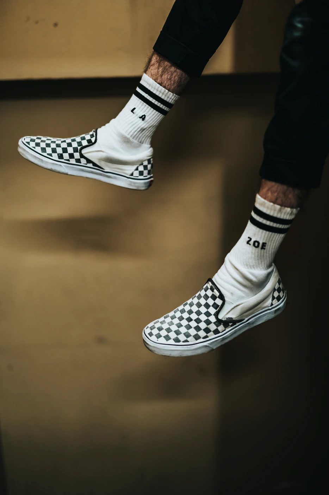

제품명: 코어클래식 SK-8Hi 스케이트-하이
가격:79000원
가장 기본적인 반스 스케이트-하이 신발로 스케이트 보드 입문자가 가장 많이 찾는다. 기존에 클래식한 느낌을 그대로 살리면서 편안함도 가진 제품이라 옷을 좋아하는 사람들도 많이 찾는 신발이다.

제품명: 코어클래식 slip-on 체커보드 슬립온
가격:59000원
캐주얼룩의 기본적인 실루엣으로, 착용감이 간편한 아이템 입니다. 반스는 몰라도 신발장에 체커보드는 하나정도 있다 라는 말이 있듯이 어떤 옷에도 어울리는 신발로 코디하기 편하다는 장점이 있습니다.